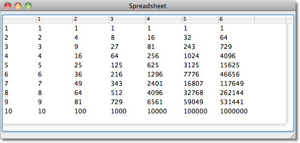

Spreadsheet
この例では、 CAPI multi-column-list-panelの使い、データを表示するために、汎用の複数のカラムがある表を作る方法を学びます。一般的には、次のようにします。
(spreadsheet rows columns cell-fn)
・行(rows)は、上から下に表示される項目のリストです。
・列(columns)は、テーブル上部に表示されるアイテムのリストです。
・そして、cell-fnは、 各セルの内容を計算する２つの引数の関数です。
例
この例では、1から10までの累乗を計算します。
(spreadsheet '(1 2 3 4 5 6 7 8 9 10) '(1 2 3 4 5 6) #'expt)
こう書くことで、次のように表示されます:

カラムのheadingをクリックすると、そのカラムを昇順か降順で並べ替えます。表は、その内容が文字列か数字かに基づいて、正確に並べ替えられます。
そのcommandは、**row-label-fn**と **column-label-fn** を取ることができます。それらは、表の左側と上部に伴うラベルを計算するときに使われます。例えば、以下のように定義されるクラスがあると仮定しましょう:
(defclass classic-car () ((name :initarg :name :accessor name) (year :initarg :year) (cylinders :initarg :cylinders) (capacity :initarg :capacity)))
次のようなインスタンスを定義できます:
(defparameter *cars* (list (make-instance 'classic-car :name "Saab 96V4" :year 1967 :cylinders 4 :capacity 1498) (make-instance 'classic-car :name "Porsche 911 Carrera" :year 1984 :cylinders 6 :capacity 3200) (make-instance 'classic-car :name "MGC" :year 1967 :cylinders 6 :capacity 2912) (make-instance 'classic-car :name "Ferrari Daytona" :year 1968 :cylinders 12 :capacity 4390)))
全てのオブジェクトとそのスロットを含む表を表示するには次のように呼びます:
(spreadsheet *cars* '(year cylinders capacity) #'slot-value
:row-label-fn #'name :column-label-fn #'string-capitalize)
こう書くことで、次のように表示されます:

定義
spreadsheet関数の定義です:
(defun spreadsheet (rows columns cell-fn
&key (title "Spreadsheet") (row-label-fn #'identity) (column-label-fn #'identity))
"行と列からなる要素の組み合わせにcell-fnを適応することで表を描く"
(let* ((sequence (map 'list
#'(lambda (row)
(cons (funcall row-label-fn row)
(map 'list
#'(lambda (column) (funcall cell-fn row column)) columns))) rows))
(table (make-instance 'capi:multi-column-list-panel
:items sequence
:header-args '(:selection-callback :sort)
:columns (cons '(:width 144 :title :| |)
(map 'list
#'(lambda (column)
(list
:width 72
:title (intern
(princ-to-string
(funcall column-label-fn column))
:keyword)))
columns))
:callback-type :collection-data
:sort-descriptions (spreadsheet-sort-descriptions
columns
:column-label-fn column-label-fn)
:external-min-width (+ 144 (* 76 (length columns)))
:external-max-width nil :external-min-height 240))
(window (make-instance 'capi:interface
:title title
:layout (make-instance 'capi:column-layout :description (list table)))))
(capi:display window)))
This creates a multi-column-list-panel with the following parameters:
:itemsはsequenceに設定されます。 sequenceは、表の行(rows)のリストです。それぞれの行は、行のlabelで構成されるリストであり、その行のitemsが後に続きます。
:columns は、それぞれの列の幅とタイトルを明示するリストにセットされます。それぞれの列は、キーワードで特定されます。キーワードは、列のタイトルとして使われるだけでなく、列の記述を並び替えるためにも使われます。初めの列は、:| | のラベルを持っています。:| | は、スペースをその名前として持っているキーワードです。:sort-descriptions は、それぞれの列にthe sorting descriptionsを生成するために spreadsheet-sort-descriptionsを使います。それは、sorting-descriptionsのリストを返して、それぞれの列に１つずつ、列をlabellingしているキーワードに:typeをセットします。
(defun spreadsheet-sort-descriptions (columns &key (column-label-fn #'identity))
(let ((n 0))
(cons
(capi:make-sorting-description
:type :| |
:sort (test-nth 0)
:reverse-sort (test-nth 0 t))
(map 'list #'(lambda (column)
(incf n)
(capi:make-sorting-description
:type (intern (princ-to-string (funcall column-label-fn column)) :keyword)
:sort (test-nth n)
:reverse-sort (test-nth n t)))
columns))))
sorting-descriptionは 、nth itemに基づいて全ての行を並べ替えます。
test-nthは、それに渡される２つのリストのnth itemsと、x yの２つのパラメータを比較するために、関数を返します。
test-nth は次のように定義されます:
(defun test-nth (n &optional reverse)
#'(lambda (x y)
(funcall (if (numberp (funcall #'nth n x)) #'> #'string-greaterp)
(funcall #'nth n (if reverse y x))
(funcall #'nth n (if reverse x y)))))
test-nth は、比較されているitemsを見て、 > か string-greaterp をitemsを並べかえるために適切に使います。なので、異なる型のデータを含んでいら場合でも正確に動作します。
補足
2015年8月16日：:column-label-fn パラメーターを使うと生じる並べかえの問題を修正するために、:column-label-fn パラメーターがspreadsheet-sort-descriptionsに追加されました。